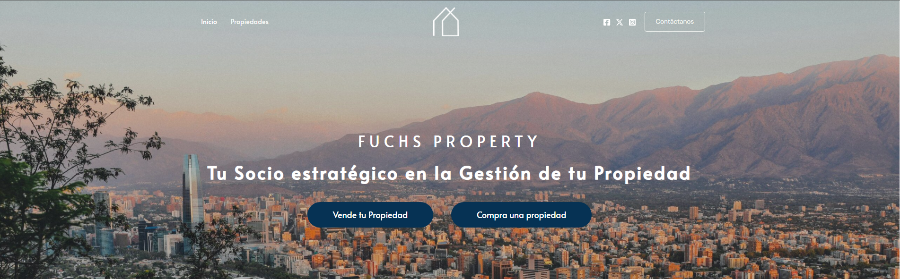
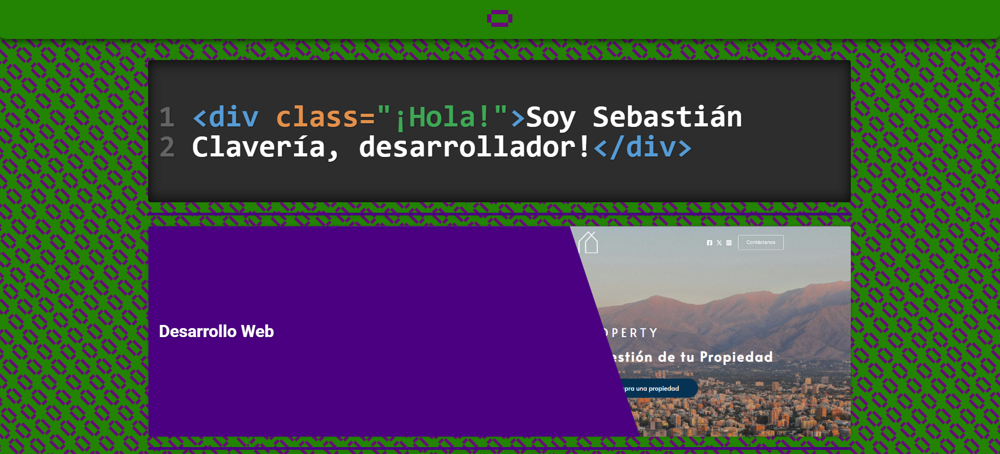

1 <div class="FUCHSPROPERTY.COM">
2 <p>Fuchsproperty.com es una pagina de compra
3 y venta de propiedades, desarrollada utilizando
4
wordpress, funciona como link de contacto entre
5 posibles compradores y la empresa fuchs property
6 </p>
7 <p>Originalmente la pagina fue desarrollada
8 como proyecto estatico, utilizando html, css y javascript
9
proyecto que fue almacenado en su propio
10 repositorio en github</p>
11</div>|

<p>Luego de desarrollada la pagina principal en html, se decidio por continuar el desarrollo utilizando wordpress, por la facilidad de mantención para el cliente post entrega.</p>

1 <div class="PORTFOLIO">
2 <p>Esta misma pagina, desarrollada como pagina estatica,
3 utiliza el servicio de firebase para hosting con conexión
4
directa a github a travez de github actions como CI/CD,
5 para optimizar las actualizaciones y mantencion del
6 proyecto</p>
7 </div>|
